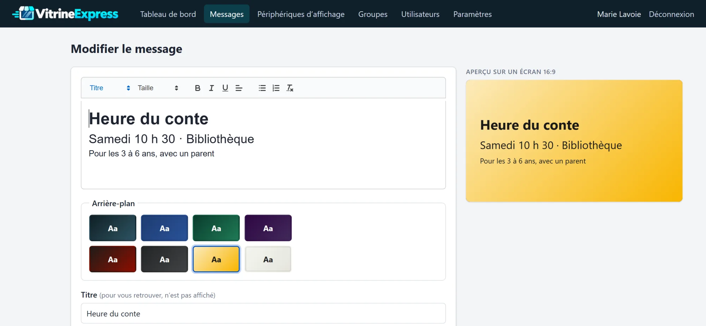
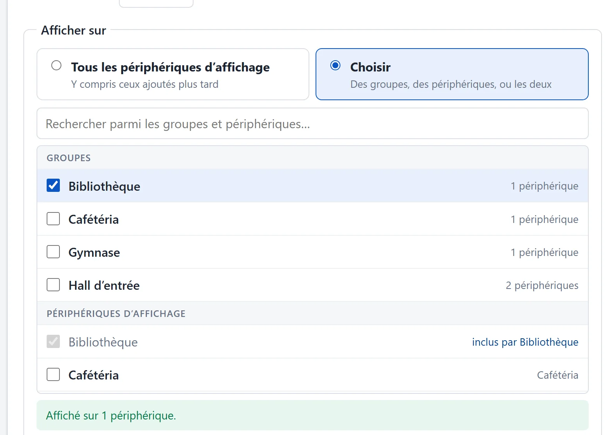
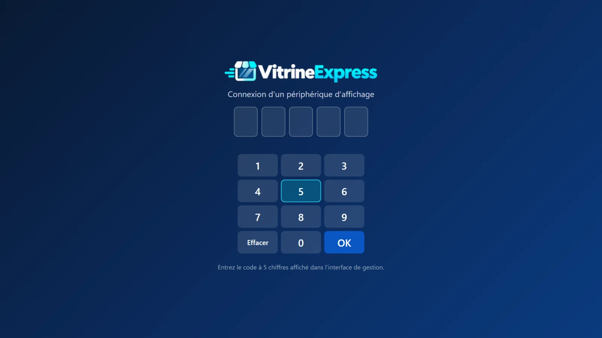
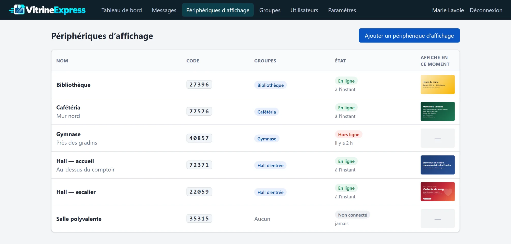
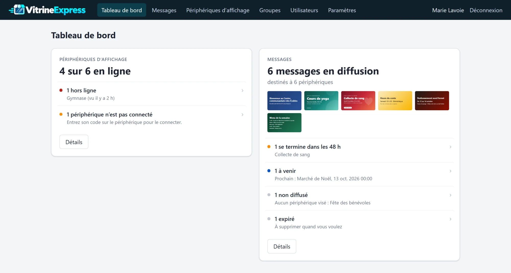
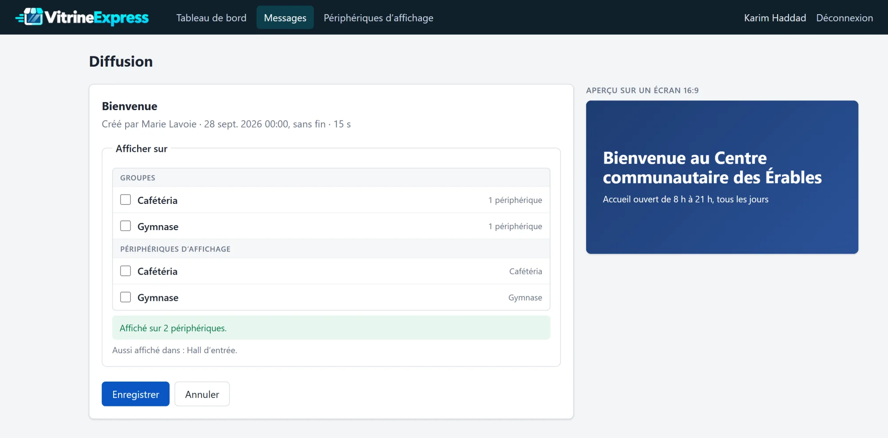

VitrineExpress est un logiciel libre d’affichage numérique. Vous créez un message, vous choisissez les écrans où il passe, et il s’affiche en rotation avec les autres.
Ce que voit un écran. Chaque message reste affiché le temps que vous avez choisi, puis le suivant prend sa place.
Trois étapes.
Une image, ou un texte sur un arrière-plan. L’aperçu montre le résultat tel qu’il paraîtra à l’écran.

Un groupe d’écrans, certains écrans, ou tous. Indiquez quand commencer et, si vous voulez, quand arrêter.

Sur l’écran, ouvrez la page d’affichage dans un navigateur et entrez le code à 5 chiffres de cet écran. Le code n’est demandé qu’une fois : l’écran reste connecté, même après une coupure.

Ce que vous voyez en ouvrant la gestion.
La liste des écrans indique si chacun est en ligne et quel message il montre en ce moment. Elle se met à jour toute seule.

Un écran hors ligne, un message qui se termine bientôt, un message qui ne vise aucun écran. Le reste, il n’en parle pas.

Un gestionnaire de groupes publie ses messages sur les écrans de ses groupes seulement. Il peut aussi reprendre un message existant pour l’afficher chez lui. L’administrateur garde la main sur tout.

VitrineExpress tourne avec PHP 8.1 et SQLite. Rien d’autre à installer, aucun service externe. Vos données restent chez vous.